Bruce Lee nasceu em São Francisco, Califórnia, Estados Unidos, no dia 27 de novembro de 1940, na hora e ano do dragão, segundo a astrologia chinesa, que denotava forte presságio de homem poderoso. Filho de integrantes da Ópera Chinesa, nasceu durante uma turnê do grupo pelos Estados Unidos. Seu nome de nascimento na verdade não era Bruce Lee , mas sim Lee Jun Fann.
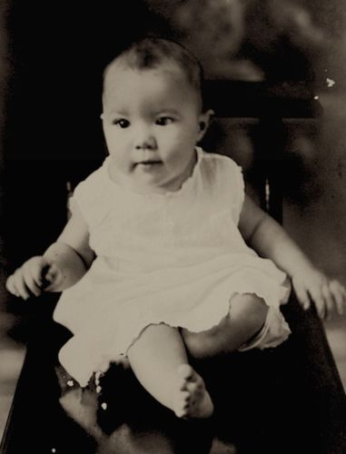Quando Bruce Lee estava com três meses de idade, sua família retornou para Hong Kong, então colônia britânica. Ainda criança, levado pelo pai, apareceu em vários filmes. Com nove anos, Bruce Lee contracenou com o pai no filme The Kid, quando interpretou seu primeiro papel principal. Era frequentemente escalado para atuar como um delinquente juvenil.
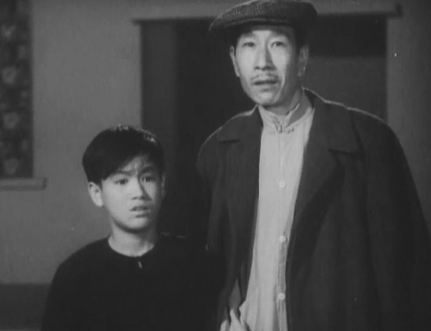Quando adolescente, Lee se juntou com uma gangue local e para melhor se defender, começou a aprender Kung-fu. Iniciou aulas de dança, o que ajudou no seu equilíbrio. Com 18 anos, Lee venceu o torneio de boxe das escolas de Hong Kong, eliminando o campeão Gary Elms. Venceu também o campeonato de Colony Cha-Cha de Hong Kong.
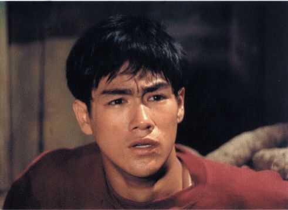Preocupados com os constantes envolvimentos de Lee com as brigas de rua e com a polícia, seus pais o enviaram para os Estados Unidos, onde passou a morar com amigos da família em Seattle.
Nessa época, Lee terminou o ensino médio e em seguida cursou teatro e filosofia na Universidade de Washington. Ainda em Seattle, ele abriu sua primeira escola de artes marciais. Em 1964, mudou-se para Oakland, Califórnia, onde abriu sua segunda escola. Nessa época, desenvolveu sua própria técnica que chamou de Jun Fan Gung, uma mistura de kung-fu antigo, Wing Chun, esgrima, boxe e filosofia.
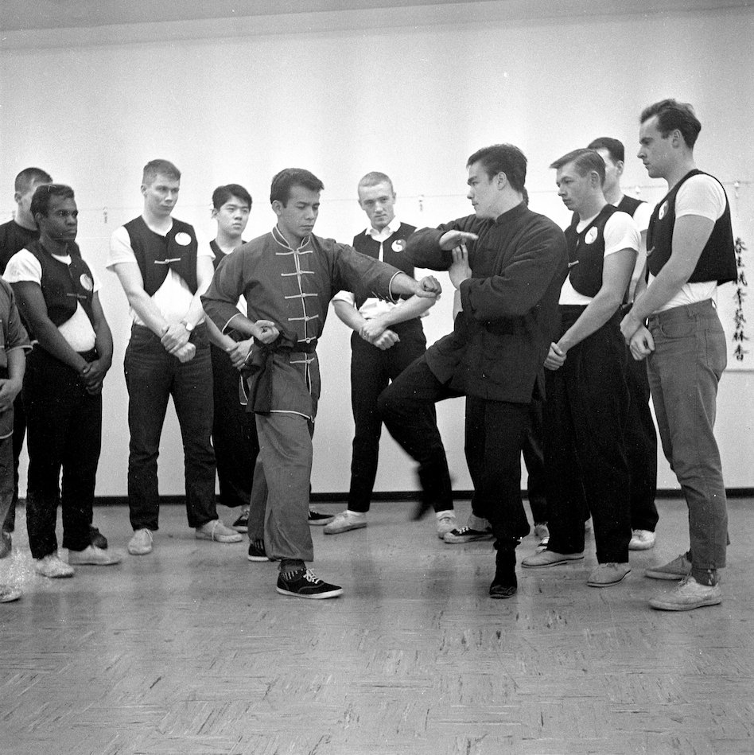Em 1966, depois de dar uma demonstração de Kung-fu em Los Angeles, Bruce Lee chamou a atenção de um produtor de televisão que o escalou como o ajudante de Kato na série de televisão “The Green Hornet” (no Brasil, "O Besouro Verde"), onde atuou durante um ano.
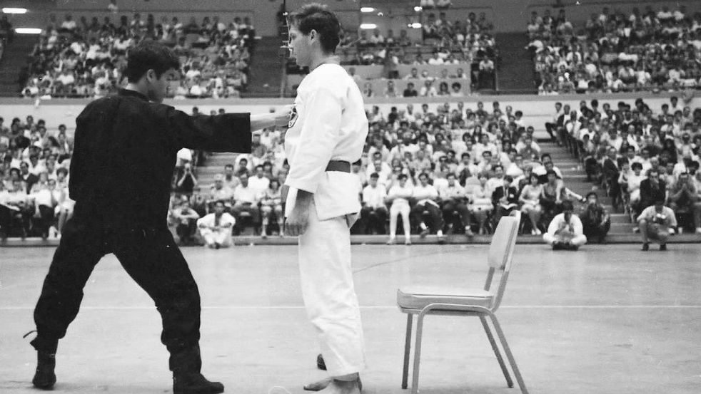 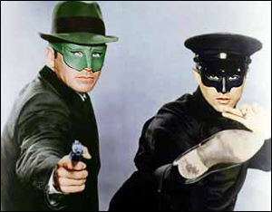Esse ponto da vida dele foi muito importante, pois houve uma sequência de eventos que o direcionaram para trabalhar muitas vezes como ator futuramente.
Curiosidade: Foi nessa demonstração que Bruce Lee demonstrou o seu movimento de arte marcial mais icônico, este chamado de "Soco de Uma Polegada".Abaixo segue a lista dos filmes mais consagrados posteriormente:
 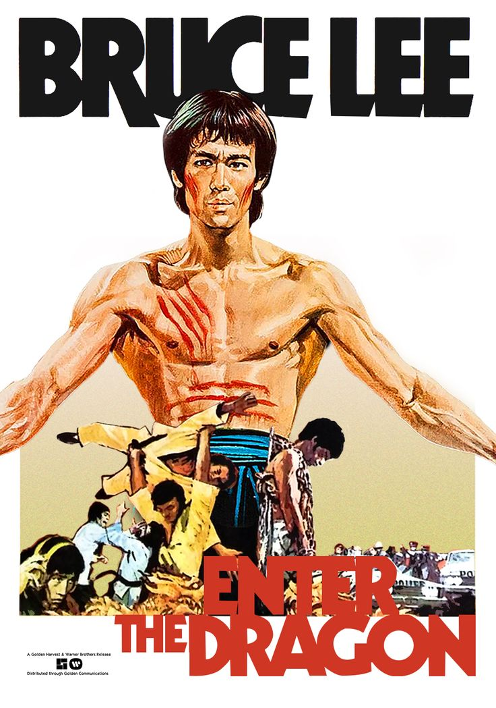
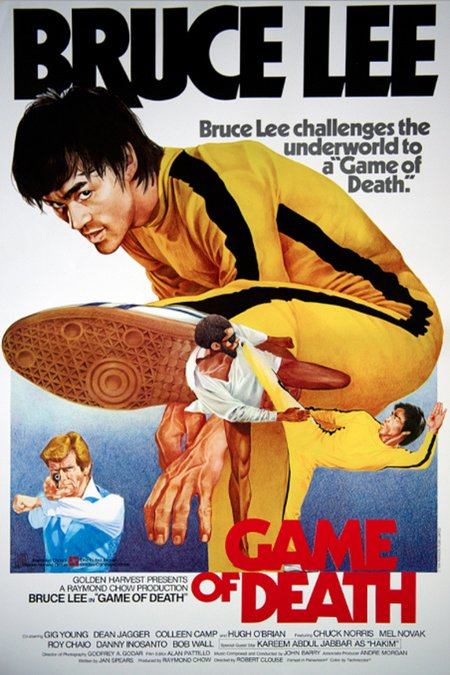
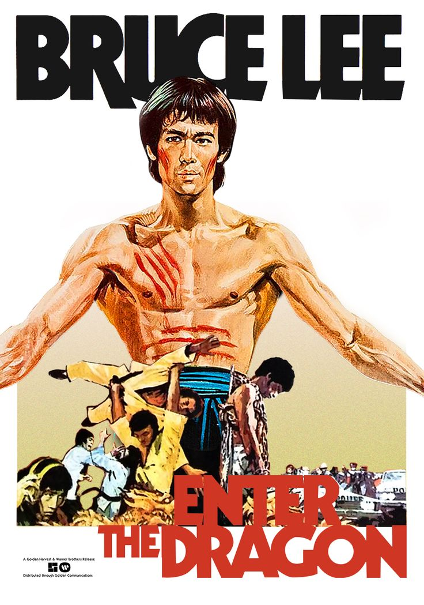
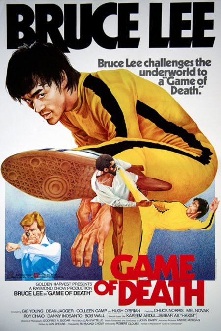
Bruce Lee faleceu em Hong Kong, no dia 20 de julho de 1973. Seu corpo foi levado para Lake View Cemetery, Seattle, Estados Unidos, onde foi sepultado.
Tragicamente, Bruce Lee morreu em circunstâncias misteriosas e sua morte foi fonte de especulações por todos os seus admiradores. Algumas delas:
Mesmo após mais de 45 anos desde sua morte, Bruce Lee é constantemente lembrado e homenageado em diversas áreas, notoriamente tendo se tornado uma figura da cultura Pop.
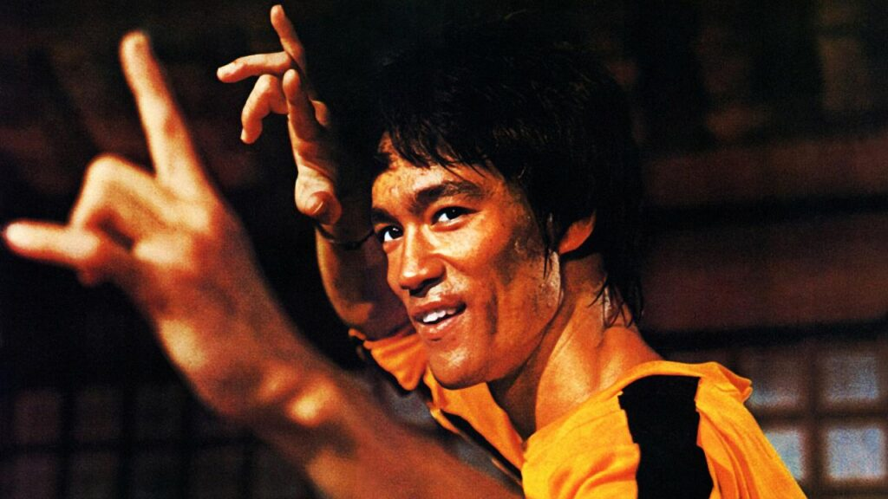Sejam artistas marciais, lutadores, filósofos ou mesmo a indústria do entretenimento com videojogos, quadrinhos, filmes e desenhos animados, há de se confirmar que Bruce Lee deixou uma herança para a humanidade cravando assim para sempre seu nome na história.